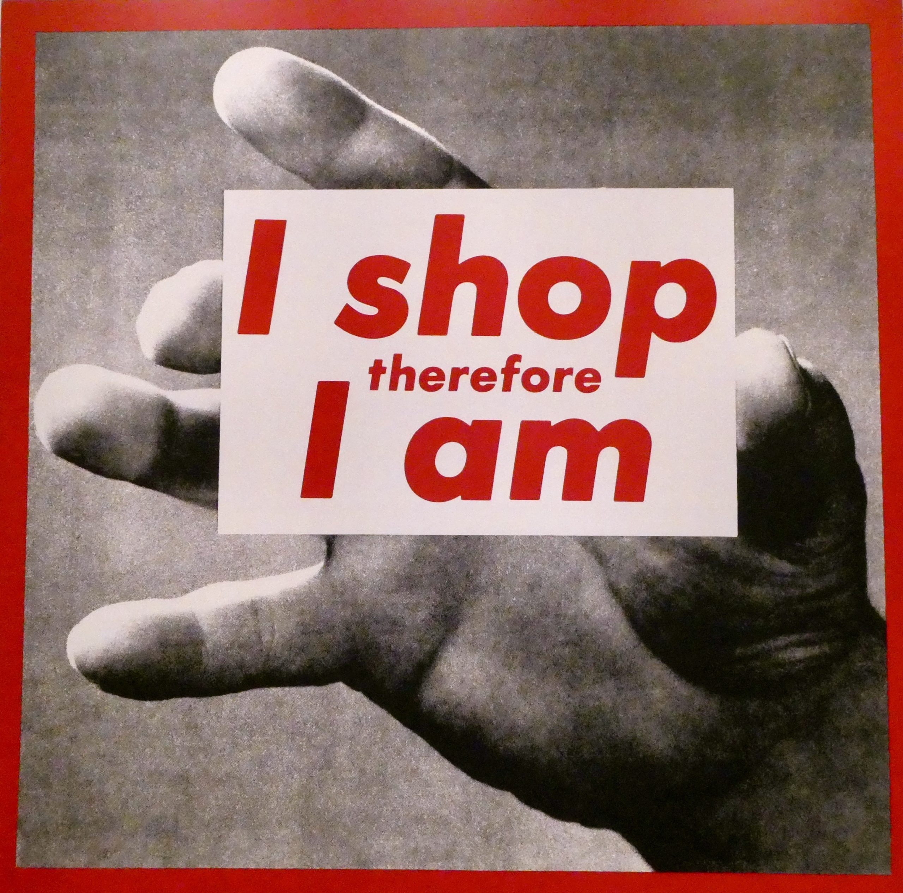
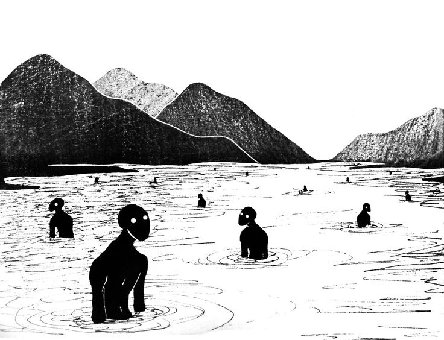
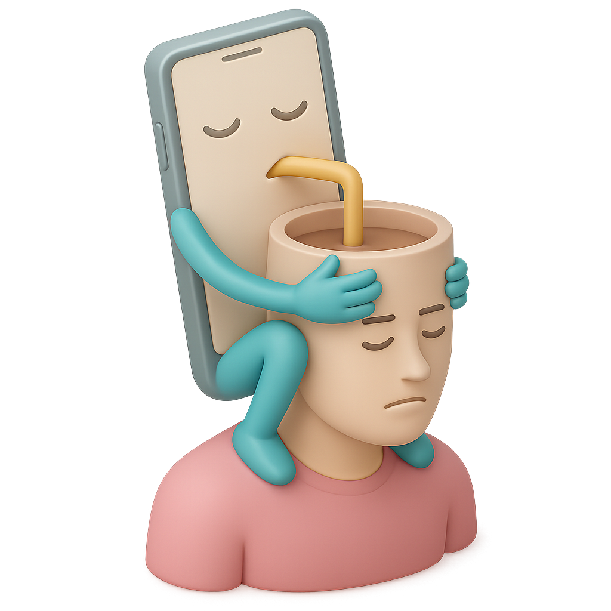
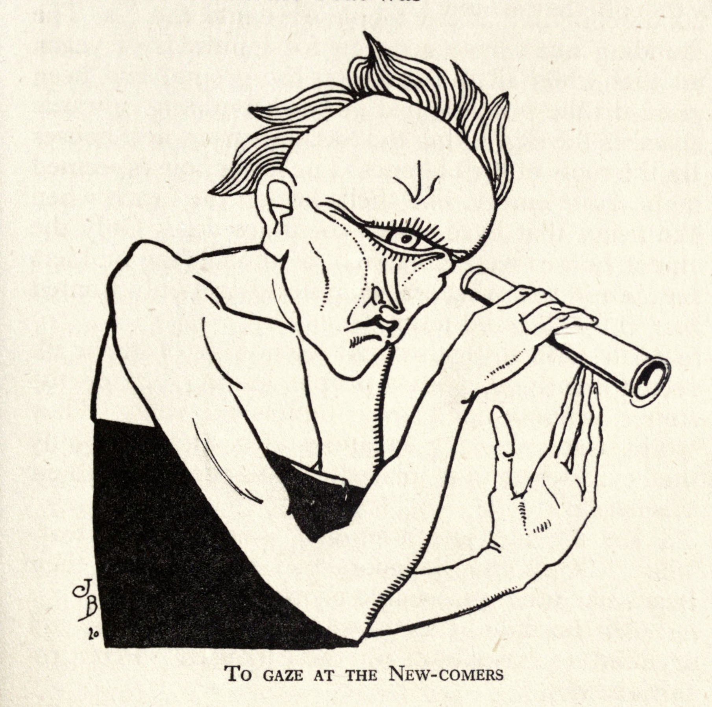
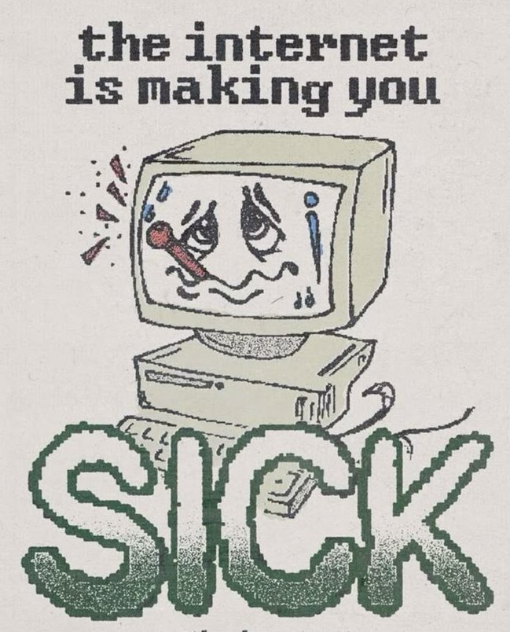
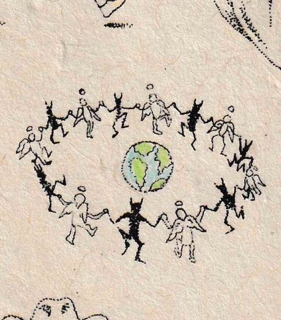

What is Consumerism?

Untitled by Barbara Kruger
- Consumerism is our culture's emphasis on buying goods and services as a way to achieve happiness and social status.
- Buying things isn't inherently harmful, but when it's combined with manipulative marketing practices and excessive consumption, it can hurt both individuals and society as a whole.
~ Some Deeper Theoretical Perspectives ~
Marx's Theory of Alienation

Karl Marx, a 19th-century philosopher, identified four ways that modern work can disconnect us from our humanity:
- Disconnection from What We Make: Workers lose control over their creations and feel no ownership or pride in the products of their labor. Think of factory workers who never see the final product they help create.
- Disconnection from How We Work: Jobs become repetitive and mechanical, stripping away creativity and personal meaning. Work feels like something that happens to you rather than something you actively engage in.
- Disconnection from Our Human Nature: We lose touch with our natural creativity and social connections, becoming isolated individuals focused mainly on economic survival rather than personal growth and community.
- Disconnection from Each Other: Instead of working together, people are forced to compete against each other, breaking down the social bonds that make us human.
When Things Become More Important Than People

- Marx noticed something strange: in our economic system, we often treat relationships between people as if they were relationships between objects. Instead of focusing on human connections, we focus on buying and selling things.
- Modern consumer culture takes this even further. We give brands and products almost magical qualities, believing that buying the right sneakers, phone, or car will make us happier, more attractive, or solve our deeper problems.
- This focus on consumption can distract us from addressing the real sources of our dissatisfaction, like meaningful work, genuine relationships, and fair economic systems.
Weber's "Iron Cage" of Modern Life

From Weird Islands by Jean de Bosschère
Max Weber, another influential thinker, worried that modern society was becoming like an "iron cage" that traps people in systems they can't escape:
- Everything Must Be Efficient: Weber saw how modern society increasingly values efficiency, predictability, and bureaucratic rules over human creativity, meaning, and personal relationships.
- Work as Moral Duty: Weber traced how religious ideas about hard work gradually transformed into our modern belief that material success equals moral goodness. This makes people feel guilty for not constantly working or accumulating wealth.
- Loss of Wonder: As scientific thinking dominates everything, the world loses its sense of mystery and meaning. People feel trapped in bureaucratic systems that treat them like numbers rather than human beings.
How These Ideas Show Up Today

- Shopping as Identity: Many people now define who they are through what they buy rather than what they create, contribute, or care about in their communities.
- Social Media Isolation: Apps like Instagram and TikTok turn our friendships and personal experiences into data that companies can sell, while algorithms decide what we see and how we connect with others.
- Gig Work Insecurity: Jobs like Uber driving or DoorDash delivery give workers less stability and fewer protections than traditional employment, while companies profit from their labor without providing benefits.
- Bureaucracy Everywhere: From corporate culture to standardized testing in schools, we're surrounded by systems that prioritize efficiency over human needs and treat people like interchangeable parts.
Why This Matters for Us Today
- Environmental Crisis: When we're disconnected from nature and focused only on efficiency and profit, we end up destroying the planet that sustains us through pollution and climate change.
- Mental Health Crisis: Rising rates of depression and anxiety connect directly to the social isolation and meaningless work that Marx and Weber warned about over a century ago.
- Political Division: When people feel alienated and disconnected, they become vulnerable to political movements that promise to restore a sense of belonging and purpose, sometimes in harmful ways.
- Technology's Double Edge: While technology promises to connect us and solve our problems, it often makes alienation worse by replacing human contact with digital interactions.
Building a Better Future Together

- Critical Thinking Education: Learning to question why our economic and social systems work the way they do helps us imagine and create better alternatives.
- Worker-Owned Businesses: When workers have a say in how their workplace operates and share in the profits, they feel more connected to their work and less alienated from what they produce.
- Strengthening Communities: Local gardens, mutual aid networks, and community spaces that prioritize relationships over profit can offer alternatives to purely efficient but impersonal systems.
- People and Planet First: Economic systems that prioritize human well-being and environmental health over endless growth and corporate profits offer hope for a more humane future.